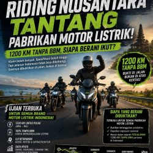
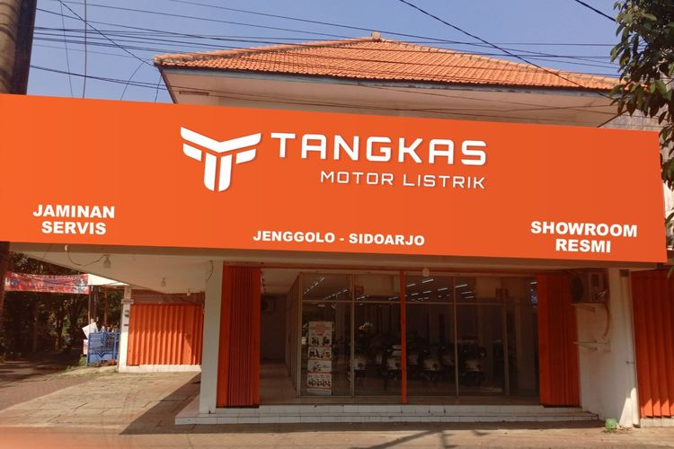
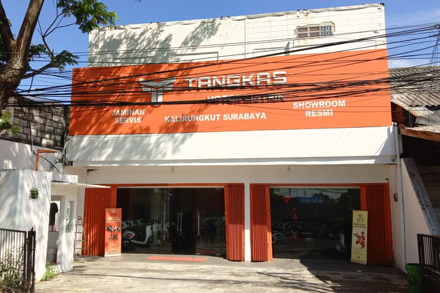
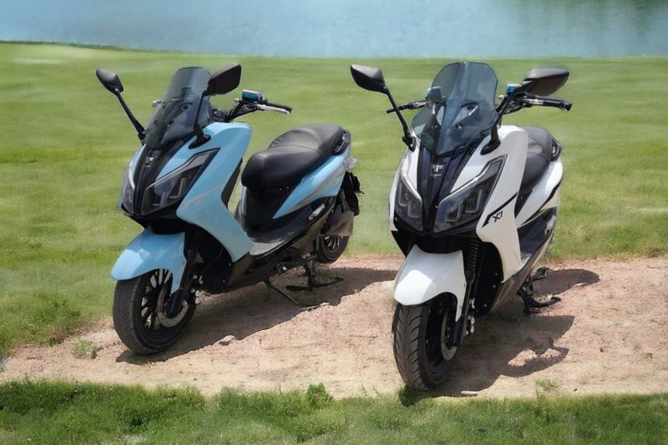
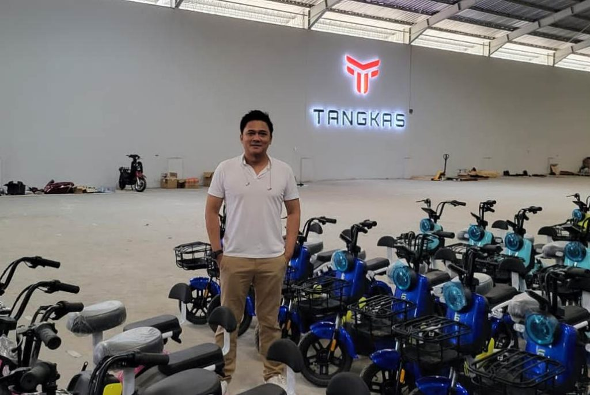
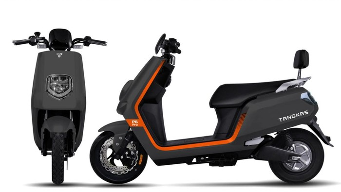
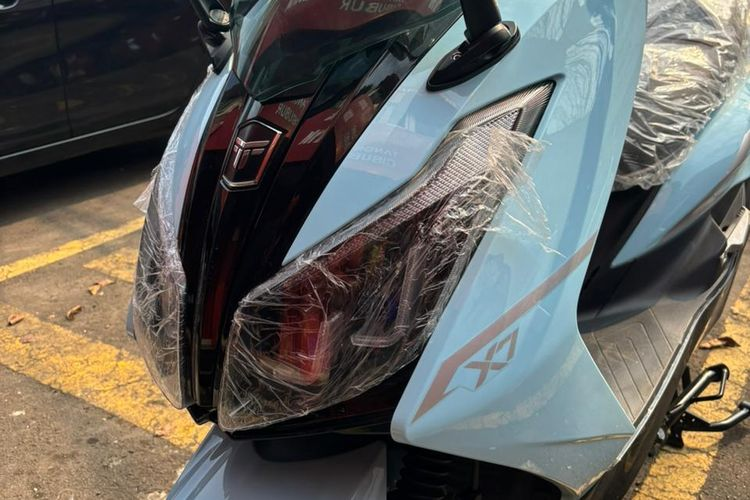
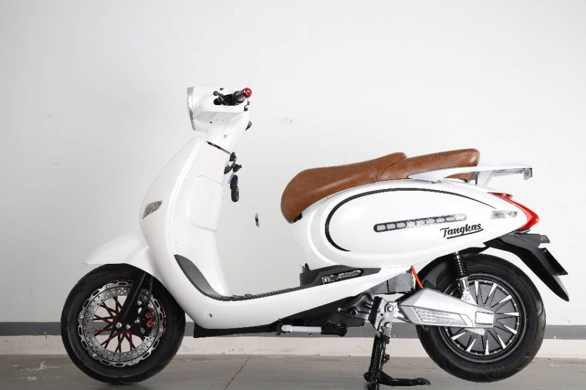

Cerita Tangkas
DI JALAN.
DI BERITA.
Perjalanan, perluasan jaringan, dan cerita produk—tertata dan terhubung ke sumber aslinya.
Riding Nusantara / 2026
JALAN PANJANG.
BANYAK CERITA.
X7 New ikut perjalanan lintas Jawa–Bali pada Juni 2026. Rute yang diberitakan mencakup Cilegon, Cirebon, Semarang, Surabaya hingga Singaraja. Perjalanan dilakukan bertahap dengan pengisian ulang, bukan 1.200 km dalam satu pengisian baterai.
Baca liputan asal
Liputan terpilih / 2023–2026
SATU CERITA.
SUMBER JELAS.
Pilihan tautan ke penerbit asli. Arsip ini memisahkan perjalanan produk, jaringan, bisnis, dan layanan agar satu peristiwa tidak berubah menjadi banyak artikel berulang di situs Tangkas.
Perjalanan X7 lintas Jawa–Bali
Baca berita
Tangkas X7 dalam Riding Nusantara
Baca berita
Pembukaan diler di Sidoarjo
Baca berita
Pembukaan cabang pertama di Surabaya
Baca berita
X7 New dan penggunaan oleh pengemudi Gojek
Baca berita
Rencana pabrik di Semarang
Baca berita
Pembiayaan melalui kerja sama Pegadaian
Baca berita
Ulasan spesifikasi X7 New
Baca berita
Pengisian daya Tangkas di rumah
Baca beritaTautan dipilih dari daftar media pada situs resmi. Untuk arsip lengkap, lihat Berita Kami. Artikel eksternal mencerminkan penerbit masing-masing.
Galeri / sumber asli
LIHAT
LEBIH DEKAT.
Foto produk, showroom, perjalanan, dan kegiatan Tangkas disimpan pada galeri resmi. Tanggal serta lokasi setiap foto perlu metadata yang diverifikasi sebelum migrasi penuh.